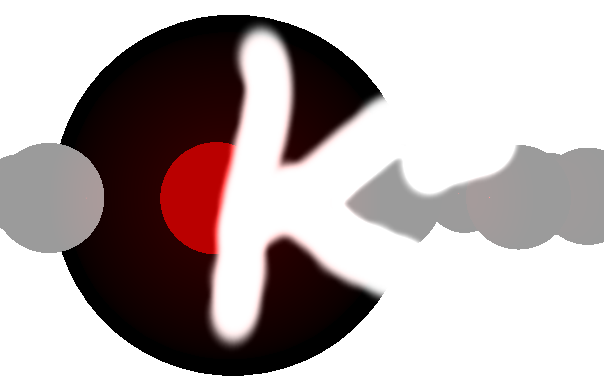

Masks onscreen content based on the alpha color value of a mask texture. More...
| Header: | #include <OpacityMask> |
| Inherits: | Kuesa::AbstractPostProcessingEffect |
| Qt3DRender::QAbstractTexture * | mask() const |
| bool | premultipliedAlpha() const |
| void | setMask(Qt3DRender::QAbstractTexture *mask) |
| void | setPremultipliedAlpha(bool premultipliedAlpha) |
| void | maskChanged(Qt3DRender::QAbstractTexture *mask) |
| void | premultipliedAlphaChanged(bool premultipliedAlpha) |
Given an RGBA mask texture, content of the backbuffer will be rendered as:
vec4 pixelColor = vec4(inputColor.rgb, inputColor.a * maskColor.a)

A premultiplied alpha variant of the algorithm is also available which can be of use when combining Qt 3D / Kuesa content with 2D QtQuick content (Scene3D). It performs rendering doing:
vec4 pixelColor = vec4(inputColor.rgb / maskColor.a, inputColor.a * maskColor.a);
#include <Qt3DExtras/Qt3DWindow>
#include <ForwardRenderer>
#include <SceneEntity>
#include <OpacityMask>
Qt3DExtras::Qt3DWindow win;
Kuesa::SceneEntity *root = new Kuesa::SceneEntity();
Kuesa::ForwardRenderer *frameGraph = new Kuesa::ForwardRenderer();
Kuesa::OpacityMask *opacityMask = new Kuesa::OpacityMask();
Qt3DRender::QTextureLoader *texture = new Qt3DRender::QTextureLoader();
texture->setSource(QUrl("file:///opacityMask.png"));
opacityMask->setMask(texture);
frameGraph->addPostProcessingEffect(opacityMask);
win->setRootEntity(root);
win->setActiveFrameGraph(forwardRenderer);
...

The RGBA texture to use as a mask.
Access functions:
| Qt3DRender::QAbstractTexture * | mask() const |
| void | setMask(Qt3DRender::QAbstractTexture *mask) |
Notifier signal:
| void | maskChanged(Qt3DRender::QAbstractTexture *mask) |
Specifies whether the masking should be performed using premultipliedAlpha. This can be useful when combining Kuesa and QtQuick with a Scene3D element. It is false by default.
Access functions:
| bool | premultipliedAlpha() const |
| void | setPremultipliedAlpha(bool premultipliedAlpha) |
Notifier signal:
| void | premultipliedAlphaChanged(bool premultipliedAlpha) |